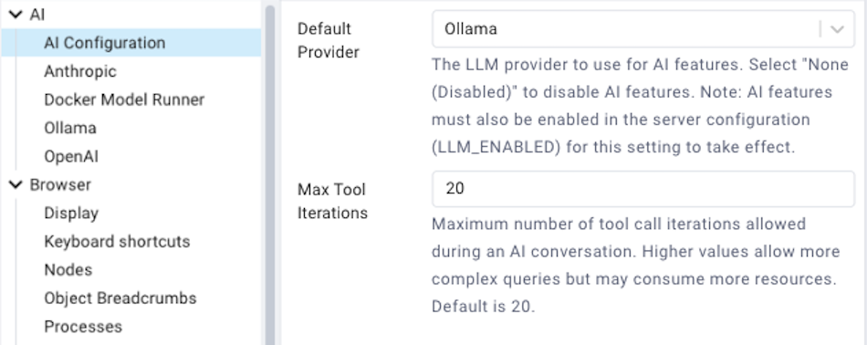
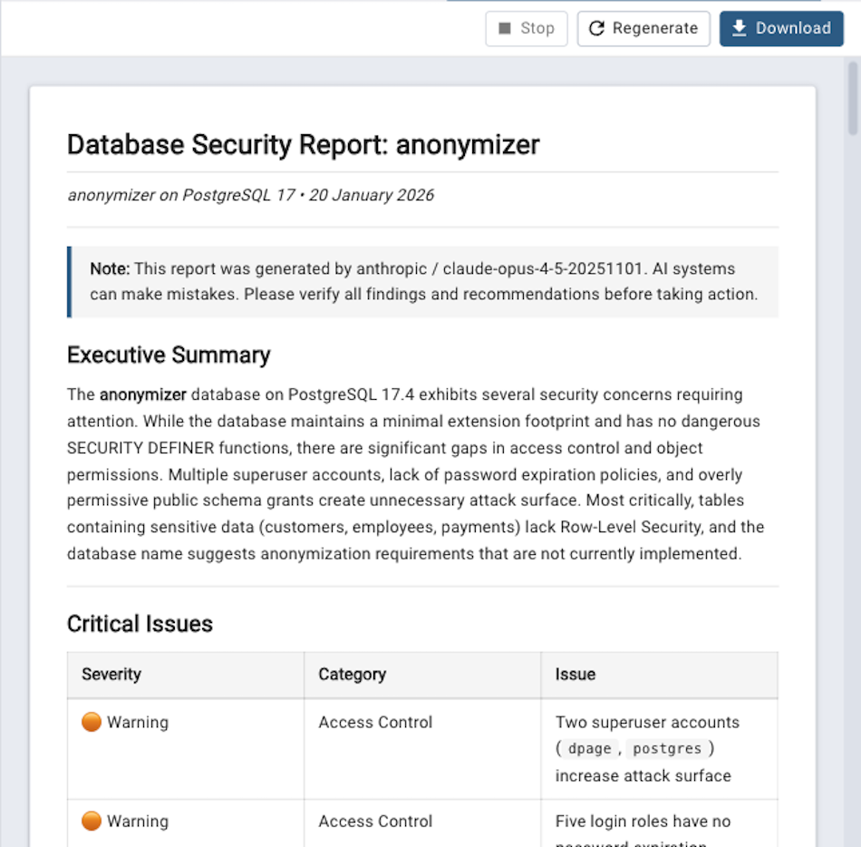

AI Reports¶
AI Reports is a feature that provides AI-powered database analysis and insights using Large Language Models (LLMs). Use the Tools → AI Reports menu to access the various AI-powered reports.
The AI Reports feature allows you to:
Generate security reports to identify potential security vulnerabilities and configuration issues.
Create performance reports with optimization recommendations for queries and configurations.
Perform design reviews to analyze database schema structure and suggest improvements.
Prerequisites:
Before using AI Reports, you must:
Ensure AI features are enabled in the server configuration (set
LLM_ENABLEDtoTrueinconfig.py).Configure an LLM provider in Preferences → AI.
Note:
AI Reports using cloud providers (Anthropic, OpenAI) require an active internet connection. Local providers (Ollama, Docker Model Runner) do not require internet access.
API usage may incur costs depending on your LLM provider’s pricing model. Local providers (Ollama, Docker Model Runner) are free to use.
The quality and accuracy of reports depend on the LLM provider and model configured.
Configuring AI Reports¶
To configure AI Reports, navigate to File → Preferences → AI (or click the Settings button and select AI).

Select your preferred LLM provider from the dropdown:
- Anthropic
Use Claude models from Anthropic, or any Anthropic-compatible API provider.
API URL: Custom API endpoint URL (leave empty for default: https://api.anthropic.com/v1).
API Key File: Path to a file containing your Anthropic API key (obtain from https://console.anthropic.com/). This path refers to the filesystem where the pgAdmin server is running (e.g., inside the container if using Docker). The
~prefix is expanded to the home directory of the user running the pgAdmin server process. Optional when using a custom URL with a provider that does not require authentication.Model: Select from available Claude models (e.g., claude-sonnet-4-20250514).
- OpenAI
Use GPT models from OpenAI, or any OpenAI-compatible API provider (e.g., LiteLLM, LM Studio, EXO, or other local inference servers).
API URL: Custom API endpoint URL (leave empty for default: https://api.openai.com/v1). Include the
/v1path prefix if required by your provider.API Key File: Path to a file containing your OpenAI API key (obtain from https://platform.openai.com/). This path refers to the filesystem where the pgAdmin server is running (e.g., inside the container if using Docker). The
~prefix is expanded to the home directory of the user running the pgAdmin server process. Optional when using a custom URL with a provider that does not require authentication.Model: Select from available GPT models (e.g., gpt-4).
- Ollama
Use locally-hosted open-source models via Ollama. Requires a running Ollama instance.
API URL: The URL of your Ollama server (default: http://localhost:11434).
Model: Enter the name of the Ollama model to use (e.g., llama2, mistral).
- Docker Model Runner
Use models running in Docker Desktop’s built-in model runner (available in Docker Desktop 4.40+). No API key is required.
API URL: The URL of the Docker Model Runner API (default: http://localhost:12434).
Model: Select from available models or enter a custom model name.
Note
You can also use the OpenAI provider with a custom API URL for any OpenAI-compatible endpoint, including Docker Model Runner and other local inference servers.
After configuring your provider, click Save to apply the changes.
Security Reports¶
Security Reports analyze your PostgreSQL server, database, or schema for potential security vulnerabilities and configuration issues.
To generate a security report:
In the Browser tree, select a server, database, or schema.
Choose Tools → AI Reports → Security from the menu, or right-click the object and select Security from the context menu.
The report will be generated and displayed in a new tab.

Security Report Scope:
Server Level: Analyzes server configuration, authentication settings, roles, and permissions.
Database Level: Reviews database-specific security settings, roles with database access, and object permissions.
Schema Level: Examines schema permissions, object ownership, and access controls.
Each report includes:
Security Findings: Identified vulnerabilities or security concerns.
Risk Assessment: Severity levels for each finding (Critical, High, Medium, Low).
Recommendations: Specific actions to remediate security issues.
Best Practices: General security recommendations for PostgreSQL.
Performance Reports¶
Performance Reports analyze query performance, configuration settings, and provide optimization recommendations.
To generate a performance report:
In the Browser tree, select a server or database.
Choose Tools → AI Reports → Performance from the menu, or right-click the object and select Performance from the context menu.
The report will be generated and displayed in a new tab.
Performance Report Scope:
Server Level: Analyzes server configuration parameters, resource utilization, and overall server performance metrics.
Database Level: Reviews database-specific configuration, query performance, index usage, and table statistics.
Each report includes:
Performance Metrics: Key performance indicators and statistics.
Configuration Analysis: Review of relevant configuration parameters.
Query Optimization: Recommendations for improving slow queries.
Index Recommendations: Suggestions for adding, removing, or modifying indexes.
Capacity Planning: Resource utilization trends and recommendations.
Design Review Reports¶
Design Review Reports analyze your database schema structure and suggest improvements for normalization, naming conventions, and best practices.
To generate a design review report:
In the Browser tree, select a database or schema.
Choose Tools → AI Reports → Design from the menu, or right-click the object and select Design from the context menu.
The report will be generated and displayed in a new tab.
Design Review Scope:
Database Level: Reviews overall database structure, schema organization, and cross-schema dependencies.
Schema Level: Analyzes tables, views, functions, and other objects within the schema.
Each report includes:
Schema Structure Analysis: Review of table structures, relationships, and constraints.
Normalization Review: Recommendations for database normalization (1NF, 2NF, 3NF, etc.).
Naming Conventions: Suggestions for consistent naming patterns.
Data Type Usage: Review of data type choices and recommendations.
Index Design: Analysis of indexing strategy.
Best Practices: General PostgreSQL schema design recommendations.
Working with Reports¶
All AI reports are displayed in a dedicated panel with the following features:
- Report Display
Reports are formatted as Markdown and rendered with syntax highlighting for SQL code.
Toolbar Actions
Stop - Cancel the current report generation. This is useful if the report is taking too long or if you want to change parameters.
Regenerate - Generate a new report for the same object. Useful when you want to get a fresh analysis or if data has changed.
Download - Download the report as a Markdown (.md) file. The filename includes the report type, object name, and date for easy identification.
- Multiple Reports
You can generate and view multiple reports simultaneously. Each report opens in a new tab, allowing you to compare reports across different servers, databases, or schemas.
- Report Management
Each report tab can be closed individually by clicking the X in the tab. Panel titles show the object name and report type for easy identification.
- Copying Content
You can select and copy text from reports to use in documentation or share with your team.
Troubleshooting¶
- “AI features are disabled in the server configuration”
The administrator has disabled AI features on the server. Contact your pgAdmin administrator to enable the
LLM_ENABLEDconfiguration option.- “Please configure an LLM provider in Preferences”
You need to configure an LLM provider before using AI Reports. See Configuring AI Reports above.
- “Please connect to the server/database first”
You must establish a connection to the server or database before generating reports.
- API Connection Errors
Verify your API key is correct (for Anthropic and OpenAI).
Check your internet connection (for cloud providers).
For Ollama, ensure the Ollama server is running and accessible.
For Docker Model Runner, ensure Docker Desktop 4.40+ is running with the model runner enabled.
Check that your firewall allows connections to the LLM provider’s API.
- Report Generation Fails
Check the pgAdmin logs for detailed error messages.
Verify the database connection is still active.
Ensure the selected model is available for your account/subscription.